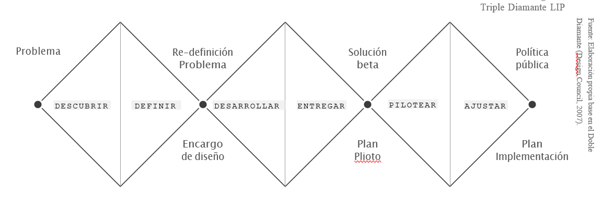
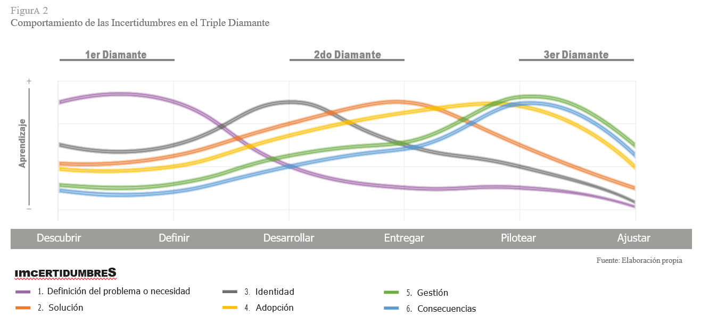

Vivimos tiempos complejos en los cuales los problemas que enfrentamos desafían las soluciones tradicionales. La triple crisis ambiental, sanitaria y económica ha transformado problemas antiguos y ha generado nuevos, demandando soluciones distintas. Tras décadas de estar inmersos en un paradigma basa- do en la certeza del progreso, hoy volvemos a hablar del futuro como algo incierto.
Sin embargo, la incertidumbre no es algo nuevo. Hace décadas que los problemas públicos se han complejizado. Sus causas son cada vez más difíciles de identificar y definir y no existen respuestas ni soluciones claras para abordarlos. La seguridad ciudadana, la segregación urbana, la obesidad o el calentamiento global son todos problemas públicos que no cuentan con so- luciones efectivas para enfrentarlos (Torfing & Triantafillo, 2016).
En el ámbito de la educación, por ejemplo, este cambio se observa en relación con la cobertura de la matrícula en los niveles de enseñanza primaria y secundaria. El desafío de muchos países, a partir de la mitad del Siglo XX, fue lograr la cobertura universal de su sistema escolar. En Chile, a mediados de 1970, se logró la cobertura universal de la educación primaria (PNUD, 2017) y a principios del 2000, la cobertura de la educación secundaria llegaba al 93% (SITEAL, 2020). El aumento de cobertura y los logros en mejora de la calidad de la educación en Chile se lograron mediante esfuerzos centrados en el aumento del gasto en el sector, el incremento en el salario de los docentes, la creación de la jornada escolar completa, la reforma curricular y el desarrollo de programas para mejorar las oportunidades educacionales de las comunidades y establecimientos más desfavorecidos (OECD, 2017a).
Sin embargo, el desafío de atraer niños, niñas y jóvenes al sistema educativo ha mutado hoy en un nuevo problema: la preocupación por los estudiantes que interrumpen su trayectoria educativa, abandonando el sistema escolar. El Gobierno de Chile ha declarado como una de sus prioridades abordar el problema de los niños, niñas y adolescentes entre 5 y 18 años que no asisten a un establecimiento educacional (Gobierno de Chile, 2018), los que alcanzaban a 186.723 niños, niñas y adolescentes en 2019 (MINEDUC, 2020).
La deserción escolar corresponde a la interrupción de la trayectoria educativa del estudiante, quien, habiendo estado matriculado en un año determinado no presenta matrícula al año siguiente, sin haber completado la educación media. En general, es la culminación de un proceso progresivo de distanciamiento entre el niño, niña o adolescente y su comunidad educativa (MINEDUC, 2020). Históricamente la interrupción de la escolaridad obligatoria ha sido entendida como “deserción”, término que ubica la principal responsabilidad en el/la estudiante. Esta forma de entender el problema ha generado soluciones basadas en supuestos que son insuficientes para dar cuenta del fenómeno del fracaso y abandono escolar de manera cabal, dificultando el diseño de soluciones para su prevención y reversión (Portales– Olivares, Cortés–Rojas y Peters–Obregón, 2019). La interrupción de la escolaridad constituye un problema público complejo y de más difícil solución que el aumento de cobertura escolar, requiriendo de soluciones intersectoriales innovadoras, que promuevan “la construcción de relaciones virtuosas de inclusión y reinserción educativa” (UNICEF, 2008).
¿Cómo generar soluciones para problemas complejos? ¿Cómo abordar la incertidumbre que genera lo desconocido? Este documento busca analizar cómo la innovación pública puede ser un mecanismo adecuado para enfrentar la creciente incertidumbre en la que nos encontramos inmersos. La innovación pública generalmente no se refiere a un nuevo producto, sino a un cambio en la relación entre los proveedores de un servicio, en este caso el Estado, y sus usuarios (Hartley, 2005), reconociendo que los servicios públicos se co-producen y que los usuarios y sus entornos son piezas fundamentales a lo largo del proceso y de su resultado. Implica además identificar la diferencia entre los riesgos y las incertidumbres que enfrentamos y aprender a gestionarlas de forma apropiada y diferenciada (Tan, 2020). Innovar requiere, principalmente la capacidad de reconocer lo que no sabemos y generar una estrategia para aprenderlo, transformando la incertidumbre en conocimiento (Seelos y Mair, 2017).
Los problemas públicos complejos tienen definiciones elusivas y difícilmente unívocas, respecto de las cuales distintos actores tienen diversas interpretaciones; son dinámicos en el tiempo; presentan dificultades para identificar una solución clara y suelen estar anclados en realidades específicas, dificultando el escalamiento de las soluciones que se generen (Centro de Políticas Públicas UC, 2019). Este tipo de problemas comparten una característica común: generan incertidumbre.
De acuerdo con la clásica definición de Knight (1921), es fundamental diferenciar la incertidumbre del riesgo. Los riesgos son situaciones en las que no sabemos lo que pasará, pero podemos estimar las posibles distribuciones del resultado. En cambio, la incertidumbre refiere a situaciones donde no se cuenta con información respecto a cuáles son los resultados posibles. Cuando se enfrentan riesgos sabemos lo que puede pasar, aunque no tengamos certeza respecto de si sucederá o no. Con la incertidumbre, en cambio, no sabemos qué es lo que puede suceder ni cuándo sucederá.
La incertidumbre puede paralizar a una organización o desafiarla a actuar. En el caso de los gobiernos, la incertidumbre tiende a complejizar la toma de decisiones, ya que para el sector público es difícil reconocer que no se tiene una solución disponible para el problema que se enfrenta. La incertidumbre inherente a los problemas complejos pone a prueba las metodologías y procedimientos que habitualmente se utilizan para diseñar servicios y programas públicos.
Con la profesionalización de la administración pública los estados han desarrollado mecanismos que ponen énfasis en el diseño de iniciativas validadas, enfocadas en la implementación estandarizada de actividades y metodologías. Se asume que los técnicos son capaces de proponer soluciones técnicas a los problemas o desafíos que se enfrentan y que la principal dificultad reside en enfrentar potenciales situaciones adversas, definidas como riesgos. Este enfoque se concentra en la estandarización — a través de manuales, protocolos y orientaciones — y en la mitigación de riesgos a través de su identificación temprana y la incorporación de acciones para controlarlos.
Los problemas complejos tensionan esta forma de hacer, ya que generan desafíos para los cuales la evidencia disponible no tiene aún respuestas, las respuestas que existen son insuficientes o no han tenido los resultados esperados. Los métodos tradicionales parten del supuesto que el problema que enfrentamos hoy es similar a problemas que hemos enfrentado en el pasado y que soluciones anteriores sirven para resolver problemas futuros (Knight, 1921). En el caso de los problemas complejos e inciertos, este supuesto muchas veces no aplica.
Enfrentar la incertidumbre requiere un cambio de paradigma que aplica a cómo se gestionan las instituciones, tanto el mundo público como en el privado (Tan, 2020). Como lo plantea McGuinnes (2020), se requiere dejar de aferrarse a planes, métricas y reglas y ser capaz de convivir con la ansiedad de no saber ni estar en control, teniendo el coraje de seguir actuando creativa y productivamente a través de la incertidumbre. La incertidumbre exige ser abordada a través de la administración adaptativa de procesos no estandarizados (Head y Alford, 2015). En el ámbito de la innovación pública, se requiere de procesos y estructuras que le den soporte y aceleren las actividades innovadoras a lo largo de todo su ciclo (OECD, 2017b).
El Manual de Oslo (OECD, 2018) define la innovación como un “producto o proceso, nuevo o mejorado (o una combinación de los mismos), que difiere significativamente de los productoso procesos anteriores de la unidad y que ha sido puesto a disposición de los usuarios potenciales (producto) o puesto en uso por la unidad (proceso)”.
La innovación pública y la innovación social se distinguen de otras actividades de innovación ya que comparten una característica principal: crear valor social mediante una nueva respuesta a problemas o necesidades. Este valor social se materializa en beneficios creados o reducción de los costos para los más vulnerables o la sociedad en su conjunto, más allá de lo que se expresa en la actividad privada de mercado (Mulgan et al, 2007).
En el caso de la innovación en el ámbito público, la OECD (2015) enfatiza en tres características:
La innovación puede entenderse como proceso y resultado. Haciendo referencia a la innovación social, por ejemplo, el Stanford Social Innovation Review (2003) la define poniendo énfasis en lo primero: “el proceso de inventar, asegurar apoyo e implementar novedosas soluciones a necesidades y problemas sociales”. En la misma publicación, Phills et. al (2008) ahondaron sobre la innovación como resultado definiéndola como “una solución novedosa a un problema social que es más efectiva, eficiente, sostenible o justa que las soluciones preexistentes y para la cual el valor creado se acumula principalmente en favor de la sociedad en su conjunto, por sobre individuos particulares”.
En base a las definiciones anteriores, entendemos la innovación pública como el proceso y el resultado de diseñar e implementar soluciones novedosas a un problema o necesidad social que sean más efectivas, eficientes, sostenibles o justas que las soluciones preexistentes y para las cuales el valor creado se acumula principalmente en favor de la sociedad en su conjunto, por sobre individuos particulares. La innovación se materializa cuando la sociedad se apropia del proceso y el resultado, utilizándolos a su favor.
Esta definición de innovación busca poner énfasis tanto en el proceso como en el resultado (Seelos y Mair, 2016; Centre for Social Innovation, 2019; Westley y Antadze, 2010), es decir, en incentivar la creación de soluciones que resuelvan con éxito los problemas, pero a la vez permitir entender y registrar cómo se logró generar las iniciativas para poder escalarlas en el tiempo (Phills et. al., 2008).
El foco en el resultado busca evaluar el valor transformador de una solución: primero, el impacto de la propuesta sobre la resolución del problema o necesidad; segundo, el número de personas beneficiadas con la solución; y tercero, la durabilidad de los efectos de esta solución en el tiempo (Lawrence et. al 2014).
El foco en el proceso busca evaluar la generación de aprendizaje. Si se evalúa la innovación sólo por su resultado externo se puede desestimar el impacto interno positivo que genera en términos de aprendizaje, aún en los casos en los que la innovación falla (Seelos y Mair, 2012).
En base a lo expuesto, innovar en el ámbito público implica un proceso de investigación, diseño y testeo metódico, en el cual se involucra a todos los actores involucrados y se gestiona el aprendizaje de manera continua, para iterar y perfeccionar las soluciones, ajustándolas a las necesidades concretas de las personas y sus entornos.
Un método de innovación basado en la gestión de la incertidumbre tiene como primera etapa identificarla. Seelos y Mair (2016), tras analizar la trayectoria de diversas instituciones dedicadas a la innovación social, identifican seis tipos de incertidumbre presentes en todo proceso de innovación social:
Primero se requiere identificar y definir correctamente el problema que se está tratando de resolver. ¿Comprendemos adecuadamente el problema o necesidad y los factores que lo causan? Ello puede implicar varias iteraciones y ciclos de aprendizaje para lograr un nivel de comprensión que permita diseñar una solución que aborde las causas (múltiples, profundas, diversas) del problema. Una comprensión insuficiente o errónea del problema y sus causas puede generar soluciones que parezcan innovadoras, pero que no sean efectivas.
Aun cuando se ha identificado el problema adecuadamente, existirán numerosas interrogantes que abordar para crear una solución efectiva y robusta. ¿El conjunto de acciones que planteamos, representan una solución real al problema? La incertidumbre respecto de la solución reduce las posibilidades de convertir la idea en una innovación efectiva.
La innovación puede llevar a la organización en una dirección que no se alinea con su cultura institucional o con su objetivo. Esto se puede dar por cercanía con las personas, por expertise técnico o por características propias del territorio y su organización social y comunitaria. ¿La solución propuesta se alinea con el propósito organizacional? Si no se alinea adecuadamente se reducirá la posibilidad de que el compromiso con la innovación sea lo suficientemente fuerte como para superar los contratiempos y persistir en el proceso de escalamiento.
¿Las personas de las comunidades objetivo aceptarán e implementarán la solución propuesta? Se debe reducir la incertidumbre respecto de los distintos perfiles de usuarios, sus características y sobre cuáles son las mejores formas de comunicarse y trabajar en conjunto para que la solución se construya desde su experiencia y su realidad. No abordar este tipo de incertidumbre reduce las posibilidades de que una solución, incluso una que "aparentemente" funcione, se afiance entre los usuarios previstos.
La implementación de una innovación depende de innumerables variables prácticas que deben ser gestionadas adecuadamente. Es necesario resolver cuál es la forma más eficiente de implementar la solución diseñada y las implicancias prácticas que esta tiene. Se incluyen aspectos como el tiempo de duración de las actividades y su orden, los costos asociados, los recursos humanos (perfil, reclutamiento, carga laboral, supervisión), necesidades de capacitación, coordinación y alianzas con otras instituciones, mecanismos de seguimiento y supervisión. ¿Existe la capacidad de ejecutar y supervisar los procesos de innovación de manera productiva? Una gestión improductiva reduce la posibilidad de implementar y dar soporte a una solución.
Debemos analizar las consecuencias directas y las externalidades de la intervención sobre los usuarios y su entorno. Se debe prestar atención, tanto a las consecuencias positivas, como a las negativas. ¿Existe el riesgo de que la solución no produzca los efectos buscados o produzca efectos secundarios negativos? Es común que las soluciones implementadas tengan más consecuencias de las previstas en la etapa de diseño. Abordar esta incertidumbre permite potenciar los impactos positivos de la intervención y reducir la posibilidad de que la innovación genere un impacto social negativo a nivel agregado.
El proceso de la innovación basado en la gestión de la incertidumbre que se propone tiene como objetivo transformar la incertidumbre en conocimiento mediante la generación de aprendizaje durante el ciclo completo de investigación, diseño, testeo e implementación, para consolidar una solución pertinente al desafío que abordamos. Para lograrlo, se deben generar hipótesis respecto de cada ámbito y ponerlas a prueba a través de un proceso de testeo e iteración que permita generar, gestionar y sistematizar aprendizajes al respecto.
Basado en la metodología del diseño de servicios, y específicamente en el Doble Diamante del Design Council (2007), el Laboratorio de Innovación Pública (LIP) de la Pontificia Universidad Católica de Chile, desarrolló una metodología para implementar procesos de innovación pública centrados en los usuarios y sus entornos (LIP, 2017).
El proceso de diseño creado originalmente por el Design Council (2007) cuenta de dos diamantes, los que han sido ampliados por el LIP añadiendo un tercero, centrado en las etapas de pilotaje y escalamiento necesarias para transformar un diseño en política pública. El modelo propuesto es el Triple Diamante (ver Figura 1) que se estructura en 6 etapas: Descubrir, Definir, Desarrollar, Entregar, Pilotear y Ajustar.
Cada diamante busca gestionar, a través de herramientas específicas, los distintos tipos de incertidumbre que emergen durante el diseño de soluciones a problemas públicos. El primer diamante aborda la incertidumbre a través de la investigación, el segundo a través del prototipado y el tercero a través del pilotaje. El aprendizaje generado en cada etapa es el mecanismo fundamental que guía el proceso (Mulgan, 2006).
Transitar los tres diamantes ayuda a generar aprendizaje respecto de los seis tipos de incertidumbre de manera transversal e implica estar atentos en todo momento a las hipótesis que se han formulado respecto de cada una de estas. No obstante, lo anterior, cada diamante es especialmente útil para generar aprendizaje respecto de incertidumbres específicas. Durante el primer diamante se pone particular énfasis en aprender respecto de la definición del problema o necesidad y la identidad. A lo largo del segundo diamante se vuelve fundamental aprender sobre la identidad, la solución y la adopción por parte de los usuarios. En el tercer diamante, el pilotaje permite aprender especialmente respecto de la gestión, la adopción y las consecuencias. la Figura 2 resume el comportamiento previsto en materia de aprendizaje a lo largo de los tres diamantes y sus seis etapas.
La primera forma de elaborar y testear hipótesis para reducir la incertidumbre es la investigación. Co–conocer implica reconocer que la investigación es un proceso colectivo que aborda sistematizar y profundizar el conocimiento formal y no formal en manos de todos los actores involucrados. Para lograrlo se debe integrar actores y triangular métodos que permitan acercarse a la complejidad de la realidad. La investigación es un ejercicio colectivo que debe ser lo más transversal y abierto posible y cuyos resultados le pertenecen a todos los involucrados. Al igual que los servicios, la investigación también se co–produce.
La investigación debe considerar fuentes secundarias y primarias, utilizando metodologías cualitativas y cuantitativas. La investigación secundaria es aquella que se hace sobre fuentes ya existentes, involucrando revisión bibliográfica, análisis de antecedentes, referentes y de la data cuantitativa disponible. Este tipo de instrumentos permite sistematizar el conocimiento formal ya existente.
Con este marco de referencia es fundamental la investigación cualitativa en profundidad. Esta permite indagar respecto del conocimiento formal e informal que está en manos de los actores, despejando incertidumbres iniciales a través de conversar, observar y experimentar respecto de la realidad que se está abordando, desde la perspectiva de las personas involucradas y sus entornos.
Este proceso responderá algunas de las preguntas iniciales y generará muchas otras, dando inicio al proceso de iteración y gestión del aprendizaje característico de la innovación. La investigación cualitativa en profundidad permite “escuchar, entender y empatizar con diferentes tipos de usuarios y agentes, abriendo el espacio para abarcar las complejidades de lo individual y lo colectivo” (LIP, 2017).
La etapa de investigación permite abordar en profundidad la incertidumbre sobre la definición y comprensión del problema o necesidad, reduciendo las posibilidades de iniciar un proceso de innovación sobre bases erradas. Además, esta etapa permite generar la comprensión del contexto y de los usuarios, insumos que serán claves para resolver los demás tipos de incertidumbre.
Las soluciones más pertinentes no se encuentran en manos de pocas personas, sino cuando muchas se encuentran. El trabajo colaborativo es transformador en forma y fondo y es una parte clave del proceso de innovar. Co–crear implica un profundo proceso de deliberación, definido como el “intercambio en el cual las personas pueden compartir sus ideas y percepciones, pero también escuchar activamente las de los demás, de manera tal que se generen ideas o soluciones nuevas, producto de la interacción entre los participantes” (Bojer et. al., 2008). Co–crear significa imaginar, reconocer, iterar, modificar, cambiar y revisitar. Es un camino que requiere tiempo y apertura, dejando ir incluso aquello que nos parecía fundamental cuando partimos.
Para que la co-creación sea accesible a todos los involucrados es fundamental hacer tangibles las ideas, ya que la discusión abstracta de conceptos suele dificultar la deliberación y excluir a ciertos grupos de actores. Es así que las herramientas de prototipado se vuelven fundamentales en el proceso. El prototipado se refiere al diseño de un modelo de trabajo de un producto o servicio que se puede utilizar para conocer las reacciones de las personas y los entornos (Murray et. al, 2010). Osorio (2010) amplía el concepto de prototipado a ciclos de prototipeo y prueba. Estos ciclos están orientados a refinar conceptos mediante pruebas e iteraciones que permitan descubrir problemas, disminuir la ocurrencia de fallas e identificar las mejores alternativas.
Los prototipados varían en el nivel de profundidad requerido. En la medida en que se prueban ideas de solución y se incorpora conocimiento, estos pueden ir desde actividades rápidas y de bajo costo, hasta procesos más complejos en recursos de tiempo y dinero (OECD, 2017c; Osorio, 2010). En la medida que se complejizan los prototipos pueden incluso buscar testear una versión acotada del producto o servicio, o alguna porción de estos, en el “mundo real” para retroalimentar el diseño de la solución con los hallazgos de la práctica (Murray et. al, 2010).
Estos prototipos admiten la posibilidad del error, sin que esto implique la invalidez interna del proceso de experimentación. Los errores son catalizadores de la adaptación de nuevas hipótesis sobre el servicio o producto y su estrategia. Por medio de la experimentación, iteración y validación del aprendizaje, se incrementa la probabilidad de que productos o servicios entregados respondan a las necesidades de los usuarios en la práctica, reduciendo tanto la incertidumbre como el riesgo en la implementación a mayor escala (Traube et. al, 2017).
Existen diversos instrumentos de prototipado. En general, la etapa se inicia con una prueba de concepto, que consiste en hacer tangibles (a través de diagramas, flujos, modelos y otros) la estructura conceptual de la propuesta. Este instrumento permite abordar preliminarmente la incertidumbre en torno a la solución que se diseña, permitiendo aprender rápido y a bajo costo. En esta etapa el trabajo de diseño e iteración periódica con los usuarios es clave para refinar la prueba de concepto y reducir las incertidumbres generales sobre la solución diseñada. La prueba de concepto permite también abordar tempranamente la incertidumbre de identidad, evitando involucrar a la organización en el diseño de soluciones que no se alinean con su misión institucional o anticipando un proceso de transferencia posterior de la solución que se diseñe.
En una segunda etapa se desarrollan prototipos de menor a mayor complejidad que permiten profundizar en las incertidumbres sobre la solución y abordar también la incertidumbre relacionada con la adopción futura de los usuarios. Un proceso de prototipado y testeo permitirá realizar los ajustes necesarios a la solución para que ésta funcione adecuadamente y aumente las posibilidades de adherencia de los futuros usuarios. El prototipado permite también evaluar preliminarmente aspectos relacionados con la gestión de la solución y su impacto, pero éstos requerirán de pruebas de mayor duración para su real evaluación.
La co-producción es un principio transversal al proceso de innovación pública. Alford (2009) la define como el comportamiento activo por parte del usuario quien, en conjunto con la producción desarrollada por una agencia gubernamental, e incentivada por ésta, crea valor privado y/o público a través de resultados o impactos. Las soluciones deben ser centradas en las personas y sus entornos y deben ser construidas y adaptadas en conjunto. Estar a cargo del diseño de una solución solo entrega control aparente respecto de la misma, el control real está en manos de quienes la usen. El proceso de innovación implica probar y ajustar y estar dispuesto a hacer los cambios necesarios para asegurar su correcto funcionamiento.
El pilotaje de soluciones se concibe como una prueba de larga duración de la solución que permite verificar estos aspectos, y corresponde a un paso crítico antes de la implementación (IDEO, 2019). Un piloto consiste en la implementación y testeo de soluciones “beta” y su mejora a través del involucramiento de mayor cantidad de agentes y usuarios. Las soluciones se denominan “beta” porque se reconoce que el diseño no es definitivo y se invita a los involucrados a participar activamente en su continua co-creación (LIP, 2017). Durante el pilotaje se deben usar métodos formales de gestión del aprendizaje y de evaluación, para dimensionar el grado en que la solución contribuye a resolver el problema o necesidad que lo motiva en un grupo de usuarios.
El piloto permite reducir la incertidumbre en torno a las consecuencias de la solución diseñada, permitiendo evaluar si se logra el impacto deseado y si no se generan efectos adversos no deseados. Además, el piloto permite abordar la incertidumbre sobre la gestión de la innovación, comprendiendo los diversos aspectos prácticos que determinan la viabilidad y escalabilidad de la solución propuesta, otorgando la oportunidad de realizar ajustes durante el desarrollo del piloto que corrijan los errores detectados, aborden las limitaciones y permitan validar el impacto de las modificaciones realizadas. El piloto generará los aprendizajes claves que permitirán la escalabilidad de la solución propuesta.
El ciclo de la innovación no es una respuesta infalible, que vaya a generar siempre un producto exitoso, sino que debe ser considerado como un proceso y una inversión que permite a las organizaciones y las personas mejorar su capacidad de gestionar el aprendizaje y generar conocimiento a lo largo del tiempo. Este proceso funciona en la medida que se esté dispuesto a reconocer y poner a prueba nuestras limitaciones, aceptando el error y el aprendizaje como ejes guías. Seelos y Mair (2017) ponen especial énfasis en que el objetivo central de innovar es transformar la incertidumbre en conocimiento, a través del aprendizaje. En ese sentido, el éxito de este proceso depende de la capacidad de las instituciones para aprender y escalar ese aprendizaje al interior de la organización y la comunidad.
Al inicio de este artículo se abordó cómo la complejidad del problema de la deserción escolar se ha transformado hoy en uno de los desafíos más importantes para el sistema educacional chileno. Se retomará está problemática para mostrar cómo un proceso de innovación para diseñar nuevas respuestas que aborden este problema ejemplifica de forma concreta cómo se pueden abordar los distintos tipos de incertidumbre a lo largo del diseño, prototipado y pilotaje de una solución innovadora.
El pilotaje de soluciones se concibe como una prueba de larga duración de la solución que permite verificar estos aspectos, y corresponde a un paso crítico antes de la implementación (IDEO, 2019). Un piloto consiste en la implementación y testeo de soluciones “beta” y su mejora a través del involucramiento de mayor cantidad de agentes y usuarios. Las soluciones se denominan “beta” porque se reconoce que el diseño no es definitivo y se invita a los involucrados a participar activamente en su continua co-creación (LIP, 2017). Durante el pilotaje se deben usar métodos formales de gestión del aprendizaje y de evaluación, para dimensionar el grado en que la solución contribuye a resolver el problema o necesidad que lo motiva en un grupo de usuarios.
El piloto permite reducir la incertidumbre en torno a las consecuencias de la solución diseñada, permitiendo evaluar si se logra el impacto deseado y si no se generan efectos adversos no deseados. Además, el piloto permite abordar la incertidumbre sobre la gestión de la innovación, comprendiendo los diversos aspectos prácticos que determinan la viabilidad y escalabilidad de la solución propuesta, otorgando la oportunidad de realizar ajustes durante el desarrollo del piloto que corrijan los errores detectados, aborden las limitaciones y permitan validar el impacto de las modificaciones realizadas. El piloto generará los aprendizajes claves que permitirán la escalabilidad de la solución propuesta.
La Fundación Súmate1 trabaja hace más de 25 años, en la promoción de la recuperación de trayectorias educativas, bienestare inclusión social de niños, niñas y jóvenes que se encuentran en situación de pobreza y exclusión. Súmate ha desarrollado diversas iniciativas dirigidas a abordar el problema de la interrupción de la escolaridad obligatoria, sin embargo, en los últimos años identificó la necesidad de innovar al respecto, diseñando nuevas soluciones que lograran abordar de forma más integral este problema.
Tradicionalmente, el problema de la interrupción de las trayectorias escolares se ha entendido como un problema individual, que afecta al alumno que se desescolariza. Sin embargo, a partir de su experiencia y de la evidencia internacional, Súmate constató que este no es un problema individual de los alumnos, sino que involucra a su entorno familiar, territorial y a la comunidad educativa en su conjunto. Como lo señala Portales–Olivares et. al. (2019), “cuando un/a estudiante fracasa o, finalmente, abandona su proceso de escolarización, generalmente lo hace debido a que las dinámicas propias de su establecimiento escolar —y del sistema educativo en general— colisionan con sus experiencias de vida. Esta colisión o choque se expresa en la incapacidad del sistema educativo y de los/as profesionales de la escuela de lidiar con niños, niñas y/o jóvenes que presentan desmotivación y conductas disruptivas para el contexto formativo”.
A partir de la investigación bibliográfica y la investigación cualitativa SÚMATE redefinió la problemática de la interrupción de la trayectoria educativa, la que pasó a ser entendida como un problema complejo y multicausal, siendo parte el sistema educativo. Un mejor entendimiento y definición del problema les permitió también definir la necesidad de abordarlo a través de iniciativas que se implementaran al interior de las comunidades educativas y no afuera, como se había hecho en Chile hasta ese momento.
A partir de esta constatación, Súmate desarrolló un proceso de co-creación para diseñar una solución que abordara el problema redefinido. A partir de una experiencia previa, a pequeña escala, que se había implementado en un colegio de enseñanza básica, se diseñó una prueba de concepto y se invitó al Ministerio de Educación y a la Municipalidad de La Pintana, a través de su Departamento de Educación Municipal, a un proceso de iteración y prototipado de una solución que incorporará el proceso de reingreso a las comunidades educativas formales.
En esta etapa se diseñó un prototipo con el objetivo de reincorporar al sistema educativo a niños, niñas y jóvenes desescolarizados con dos o más años de rezago escolar, buscando reparar el daño causado por las múltiples experiencias de fracaso escolar dentro del sistema educativo. El diseño contempló que los niños, niñas y jóvenes fueran atendidos en una sala multigrado al interior de una escuela municipal, liderada por dos docentes tutores a cargo, quienes a través del uso de metodologías innovadoras buscaran ayudar a desarrollar su máximo potencial.
El trabajo colaborativo con estos actores permitió identificar adecuadamente los usuarios potenciales de la solución, los roles que tendrían que desarrollar el colegio y Súmate, los posibles establecimientos donde podría implementarse y aspectos generales de gestión. Durante esta etapa de diseño se pudo reducir, en parte, la incertidumbre relacionada con la solución, la adopción de los usuarios, la identidad y la gestión.
Cuando lograron tener un prototipo consolidado, el Ministerio de Educación presentó la iniciativa al Programa InnovaFOSIS2 , un fondo concursable que financia pilotos de innovación social con el potencial de transformarse en política pública. Fue así como se consiguieron parte importante de los recursos necesarios para transformar el prototipo diseñado en un piloto de aprendizaje3 .
El financiamiento obtenido permitió a Súmate implementar el piloto Aulas de Reingreso, en la comuna de La Pintana, entre diciembre 2018 y marzo 2020, utilizando la metodología de gestión del aprendizaje diseñada por InnovaFOSIS y con el apoyo del Laboratorio de Innovación Pública.
A pesar de la extensa trayectoria de la Fundación y del trabajo colaborativo desarrollado durante la etapa de prototipado, la ejecución del piloto obligó al equipo ejecutor a la gestión constante de la incertidumbre. Muchos de los supuestos en los que se había basado el diseño original se vieron tensionados durante la ejecución y muchas actividades se debieron ajustar para lograr los resultados comprometidos.
Dado que la etapa de prototipado no incluyó participación de usuarios directos, fue en esta dimensión donde se tenía la mayor cantidad de incertidumbre y donde se generaron los mayores aprendizajes.
El diseño original se basaba en el supuesto que, al haber muchos jóvenes desescolarizados en la comuna seleccionada, sería relativamente sencillo convocar a 25 adolescentes interesados en iniciar el proceso de reingreso. En la práctica este proceso fue más difícil de lo estimado. El primer hallazgo fue que las escuelas tenían muy poca o nula información respecto de los adolescentes que no estaban en el sistema escolar y pocas redes territoriales que les permitieran contactarlos. Para ubicarlos fue necesario implementar una estrategia de articulación con la comunidad territorial (juntas de vecinos, organizaciones sociales, consultorios, servicios municipales, etc).
Respecto a la disposición a participar del piloto y adherir a sus actividades, se evidenció una falta de valoración de la educación formal aún más pronunciadas de lo que se había previsto. Fue necesario implementar actividades adicionales de acercamiento para generar confianza y poder presentar la iniciativa a los adolescentes y sus adultos significativos.
Durante la etapa de diseño se había puesto mucho énfasis en el desarrollo de metodologías que permitieran suplir las necesidades de formación de los docentes y de los alumnos en materia educativa. No obstante, el piloto permitió identificar dos necesidades que previamente no se habían dimensionado lo suficiente.
Por una parte, se evidenció la importancia de establecer vínculos con los adolescentes que permitan construir la confianza y cercanía necesaria para el trabajo en aula. Se debió prestar especial atención al lenguaje utilizado y a las promesas y compromisos que se adquieren durante esta etapa. La construcción y mantención de la confianza entre los participantes fue un tema recurrente durante toda la intervención, lo que implicó cambios en el diseño. En una ocasión, un paseo de curso planificado no se pudo concretar, debido a la falta de un permiso administrativo, lo que generó el abandono del aula por parte de un participante. La desconfianza encontrada era tan alta que cualquier incumplimiento de una promesa o compromiso, real o percibido, se transformaba en una importante fuente de conflicto. Esto implicó cambiar de manera profunda las prácticas de relacionamiento entre docentes y alumnos para construir y consolidar las relaciones de confianza
Por otra parte, se constató la necesidad de contar con, por lo menos, 3 meses de trabajo previo al inicio formal de clases para desarrollar esas habilidades. Se identificó que los adolescentes deben entender su nuevo rol y valorarlo, y que los adultos significativos deben comprender cómo apoyar este proceso de reingreso que se inicia. Esto implicó rediseñar la solución para que las actividades comiencen antes del inicio formal de las clases, de manera de establecer ciertas condiciones mínimas necesarias para el inicio de la experiencia al interior de la escuela.
El diseño original de la solución partía de la premisa que era necesario abordar la reinserción escolar en el marco del sistema formal, pero el piloto mostró la importancia de involucrar desde el primer momento a la comunidad educativa en su conjunto. El abrir un espacio al interior de la escuela, que recibe alumnos en su proceso de reingreso, es solo el primer paso, el éxito de la iniciativa depende de que el colegio haga suyo el proceso y lo asuma como parte de sus labores cotidianas. Esto implica cambios más profundos y que toman tiempo, ya que implican modificar conductas, rutinas y prácticas muy arraigadas en las comunidades.
Por ejemplo, es clave que los estudiantes que están siendo reinsertados sean sumados de forma integral a la comunidad educativa e incluidos en todas las actividades regulares de la escuela (asambleas, centro de alumnos, paseos, eventos). Se debe contemplar además el diseño de rutinas y espacios de convivencia establesy predefinidos (recreo, horario de entrada, biblioteca, etc).
Probablemente el ámbito sobre el que más aprendizaje generó el piloto fue la gestión de la solución diseñada. Los aspectos relacionados a la gestión sufrieron cambios y adecuaciones constantes a lo largo de la ejecución para responder a una realidad territorial compleja y cambiante. Un ejemplo de esto fue el hecho que la escuela seleccionada para el piloto fue cambiada tres veces por razones de contingencia, que variaron desde un paro docente hasta una plaga de animales.
Si bien el diseño contemplaba un periodo de tiempo para la instalación, este no fue suficiente y tuvo que ser extendido. Fue necesario contar con más tiempo para insertar las actividades dentro del funcionamiento regular de la escuela y para la contratación de profesores a honorarios que no formaban parte de la plana docente. Para involucrar al cuerpo directivo y a los docentes del plantel se debieron diseñar mecanismos originalmente no contemplados para su sensibilización y trabajo conjunto, considerando instancias de vinculación formales e informales.
Con relación al personal necesario para llevar a cabo la iniciativa se confirmó que los docentes a cargo del aula son una pieza clave para el éxito de la misma y que se debe lograr que sean parte integral de la comunidad educativa.
El piloto logró los resultados esperados en materia de reinserción, pero evidenció que su logro requiere un esfuerzo mayor al inicialmente contemplado, sobre todo en materia de preparación y acompañamiento de los estudiantes, sus familias, las escuelas y la comunidad. Generar una comunidad abierta a la permanencia y el reingreso implica modificaciones en las conductas y las metodologías que tardan en incorporarse a las rutinas de las escuelas. De 184 adolescentes matriculados, 15 culminaron el año escolar, donde 10 nivelaron estudios (2 años en uno) y fueron promovidos de grado, 3 nivelaron un curso por lo que fueron promovidos a 2do medio y se mantuvieron en el aula versión 2020 y dos no lograron nivelar, pero se volvierona matricular el año siguiente.
El piloto permitió entender en mayor profundidad algunas de las implicancias que el proceso de reingreso tiene sobre la vida de los jóvenes. Su implementación mostró que reingresar a la escuela puede resultar disruptivo para las rutinas de los adolescentes. Muchos de ellos, por ejemplo, ocupaban el tiempo en trabajar o en cuidar a otros, actividades que se ven “interrumpidas” por el proceso de reingreso. Fue importante identificar estas consecuencias secundarias y abordarlas con los participantes, para lograr que el reingreso se mantenga en el tiempoy sea sustentable para su contexto.
El piloto reforzó que el reingreso es un tema que compete a la comunidad educativa y que por tanto debe ser liderado desde la escuela. Se constató la importancia de que los directivos y docentes lideren el proyecto y lo hagan propio, ya que buena parte del éxito del reingreso pasa por reinsertar a los alumnos a la dinámica de la escuela de manera pertinente a sus necesidades.
La experiencia de la Fundación Súmate, creando una solución innovadora a un problema complejo y de larga data, muestra la aplicación de las distintas etapas e instrumentos para despejar la incertidumbre y adecuar el diseño a la realidad del territorio. En efecto, esta experiencia llevó a Súmate a considerar los aprendizajes y desarrollar un piloto a mayor escala en alianza con el Ministerio de Educación, el que busca generar un modelo técnico que permita al Estado escalar la experiencia a nivel nacional. Actualmente se desarrolla en 3 territorios (Coquimbo, Andacollo y La Granja) con perspectiva de aumentar a 9 territorios durante el año 2021.
Las crisis y los cambios que estamos experimentando implican que la incertidumbre se ha instalado en la cotidianeidad. El sector privado, el sector público y el tercer sector se están viendo obligados a repensar la forma de abordar problemas irresueltos y nuevos, los cuales parecen resistir las soluciones que teníamos para ellos.
Reconocer y gestionar la incertidumbre permite un cambio de paradigma que pone en el foco en la capacidad de las personas y las organizaciones para reconocer sus limitaciones y aprender de los errores. Es un cambio cultural que implica diseñar desde el conocimiento y la mejor evidencia formal disponible, pero también desde la valoración del conocimiento informal, de las subjetividades y desde la humildad de reconocer lo que no se sabe y solo se supone.
Embarcarse en el proceso de la innovación tiene sentido en la medida que se esté dispuesto a equivocarse, aprender y aplicar lo aprendido. Estas actividades requieren tiempo y recursos,y suelen ser más difíciles de planificar, de costear y de implementar, muchas veces es más largo y no siempre resulta en una solución exitosa. A pesar de estas limitaciones si se entiende la innovación como un proceso y no solo como un resultado, permite aprender y compartir este aprendizaje con otros, lo que genera valor social.
Para innovar de manera efectiva se debe fortalecer nuestra capacidad de gestión del aprendizaje. Aprender tiene el potencial de transformar la incertidumbre en conocimiento materializado en acciones concretas, en cambio no aprender implica un importante desperdicio de recursos, voluntades y esfuerzos. De la capacidad de aprendizaje de las personas y las instituciones y de la disposición a trabajar juntos para resolver problemas complejos dependerá la capacidad de generar valor social.